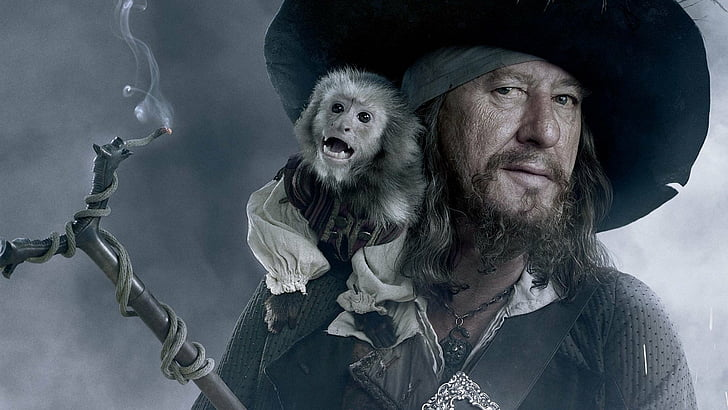
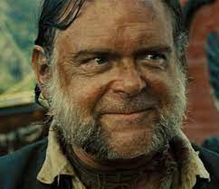
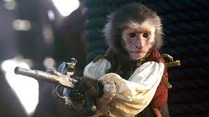

Personajes que aparecen en todas las peliculas
Jack Sparrow

Jack Teague más conocido como Capitán Jack Sparrow es un legendario pirata de Todos los Mares y un irreverente embaucador del Caribe. Un capitán de moralidad y sobriedad dudosas, maestro de la auto-promoción e interés propio. El primer amor de Jack fue el mar,el segundo su amado barco el Perla Negra,el tercero la única mujer quien ama y se enamoró es de Angelica Teach. A pesar de ser un pirata y estafador excelente también tiene buen corazón y no duda en ayudar a sus amigos y aliados cuando se requiere.
Beckett sorprendido con una hazaña de Jack le puso al mando de la "Jovencita Traviesa" un veloz barco de la compañía, Jack se negó a colaborar con Beckett para encontrar una isla cargada de oro para esclavizar a sus habitantes y transportarlos, pero cuando zarpó se dio cuenta de que la Jovencia Traviesa estaba cargada de eslavos así que Jack los liberó e intentó fugarse con la Jovencita Traviesa para volver a ser pirata y convertir a la Jovencita Traviesa en su buque insignia.
Pero Bekett indignado quiso capturar a Jack así que envió a cazarecompensas a capturar a Jack y la Jovencita Traviesa , despues de una persecucion los cazarecompensas capturaron a Jack y lo llevaban ante Bekett, quien marcó a Jack con fuego la ``P´´ de pirata que le identifica como tal para el resto de su vida. Entonces Bekett mando a destrozar la jovencita traviesa, al ver su barco ardiendo Jack corrió hacia el barco y se sumergió en el mar con la esperanza de recuperarlo, despues Jack fue enviado a Port Royal para un juicio por pirateria.
Pero en la travesía Jack se cayó por la borda en el mar tempestuoso, a un latido de distancia de la muerte el Holandes Herante rescato a Jack quien hizo un trato con David Jones para que volviese a sacar a la jovencita traviesa a cambio de cien años de servicio en el Holandés que cobrará después de trece años. Al poseer de nuevo su barco Jack lo personalizo y lo rebautizó como la Perla Negra.
Hector Barbossa
Hector Barbossa era un pirata activo en el Mar Caribe y el Señor Pirata del Mar Caspio. También fue un enemigo mortal y némesis de Jack Sparrow.
Hector Barbossa nació en Portugal en una granja en el campo que rodea la ciudad de Lisboa. Su familia era muy pobre y su padre educó a Héctor con gran severidad e incluso a veces con violencia. Cuando tenia 13 años, Hector huyó de casa y, fijado por el mar, decidió convertirse en marinero
Cuando Hector Barbossa se convirtió en pirata, era el capitán de una pequeña goleta llamada Cobra. El Cobra fue atacado por misteriosos piratas rebeldes que violaban el código de la Hermandad. Barbossa denunció el ataque a la Hermandad y en esta ocasión conoció por primera vez al joven Jack Sparrow.
Cuando Barbossa era el segundo al mando de la Perla Negra, el navío pirata más rápido del mundo y que capitaneaba Jack Sparrow, Héctor se las ingenió para convencer a su capitán y que le revelara la localización del tésoro de Cortés. Una vez que supo que estaba en Isla de Muerta se amotinó junto con toda la tripulación y dejaron a Jack en una isla solitaria con una pistola y una única bala que en caso de desesperar debería servirle para suicidarse. La cual Jack guardo por 10 años en los que Barbossa encontro el tesoro que resulto llevar con el una terrible maldición que les hace convertirse en esqueletos vivientes a la luz de la luna.
Joshamee Gibbs
Joshamee Gibbs es una persona generalmente bien informada, y es la mano derecha de Jack Sparrow, proporcionando a menudo el molde de la película tan bien como la audiencia con la información de fondo (sabe mucho sobre maldiciones y leyendas de la película) y está la revelación cómica en cierto modo.
Los ejemplos incluyen su explicación del motín contra Jack Sparrow, y el conocimiento del Kraken.
Trabajó para el Comodoro James Norrington (cuando este era teniente) y el Gobernador Swann en el pasado.
Ha acompañado a Jack Sparrow en todas sus aventuras y parece ser su mejor (y único) amigo.
El Mono Jack
El Mono Jack es mono capuchino y es la mascota de Barbossa,fue nombrado después de Jack Sparrow. Durante la maldición de la perla negra, la maldicion del perla lo afecta a el tambien por estar el dia que robaron el tesoro de cortes y la maldicion recide en todos, con la indestructibilidad(nunca mueren). Jack se hace temporalmente mortal otra vez cuando las elevaciones la maldición, aunque él roba otra moneda y más adelante se maldice otra vez. Durante el cofre del hombre muerto, él reside en la perla negra y atormenta a equipo hasta que lo truequen a Tia dalma para la localización de El Holandés Errante y del tarro de tierra que ella da a Jack Sparrow
En Navegando Aguas Misteriosas, el mono se queda atrapado en la botella dondeBarba Negra tiene al Perla Negra, y aparece en dos ocasiones en las que Jack dice: como odio a ese mono
Jack se maldijo junto con el resto de la tripulación de la Perla Negra y ayudó a los hombres de Hector Barbossa a localizar las 882 monedas que los liberarían de la maldición. Jack robó la pieza final del tesoro de Will Turner a bordo del Interceptor y se la devolvió a Barbosa. Estuvo presente en la muerte de Barbosa en Isla de Muerta y, en este punto, se liberó de la maldición, después de haber sido aplastado por Elizabeth, que ya no le tenía miedo a Jack. Sin embargo, Jack robó deliberadamente una moneda del cofre del tesoro, asegurándose así de que fuera maldecido una vez más.
Nota: Aunque el perla negra no es un personaje, también aparece en todas las peliculas